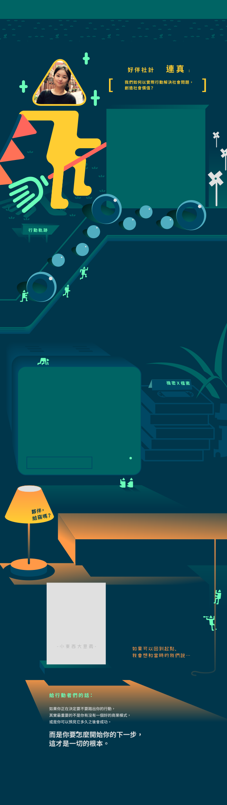
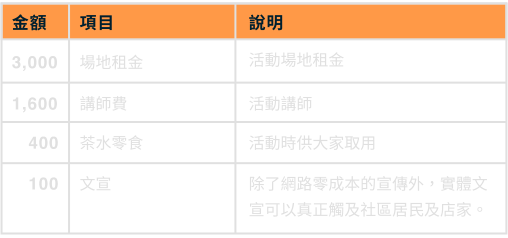
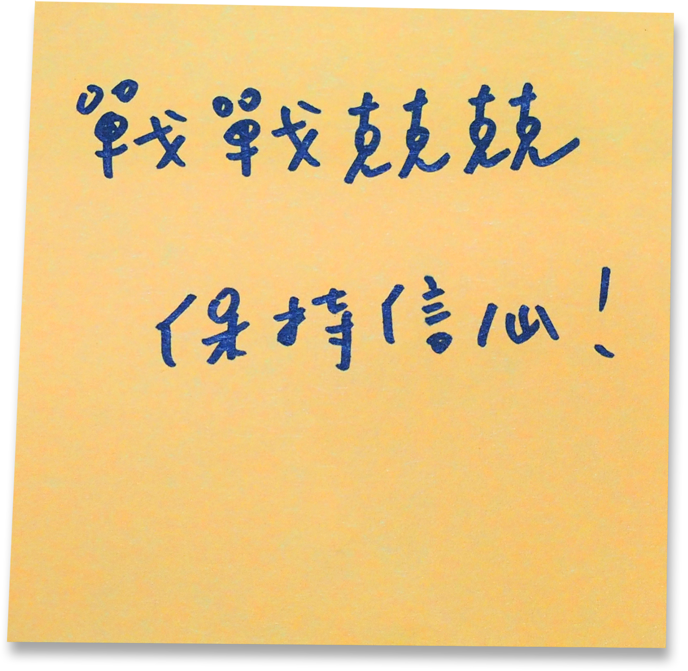
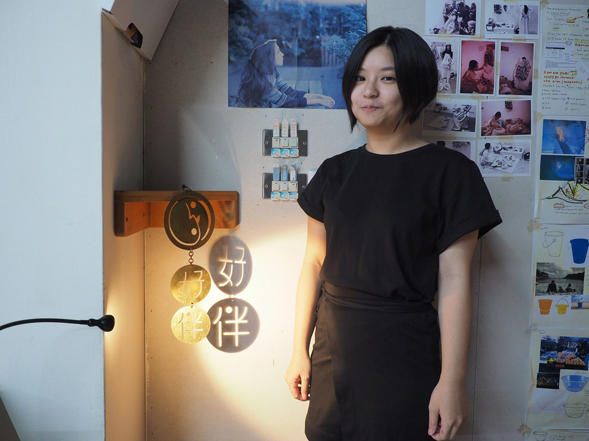

讓舊城成為社會設計的搖籃——好伴社計
好伴於 2013 年，在臺中舊市區扎根，以「做自己喜歡的工作，讓工作友善社會」為目標，成立好伴工作室，致力於青年實踐與舊城再生兩大主題，串聯社區在地團體，成為社會議題的資訊平台與支持青年行動家的實作基地。思考著未來 10 年、20 年想要在臺灣帶來的改變，2017 年，轉型以「好伴社計」出發，提供社會設計、社區設計的專案執行及策略研究服務，期望培育新一代的社會創新夥伴，共同以實際行動解決社會問題。
點擊不同的軌跡查看行動夥伴的故事！
行動軌跡 - Action 1
這個故事要從「好伴」的兩位創辦人說起。他們相遇在大學時期，為完成課堂上的分組作業而找了一個共同關注的社會議題，進而發想解決的實作方案。
當時，他們所訂下的主題是社會住宅，課堂之餘他們也想認真地將方案付諸實踐，於是開始上網搜尋適合的實作場域，希望能以社會住宅為目標，同時做到社區經濟、居民培力、公共事務討論等面向。
在密集的搜羅後，他們在台中市的舊城區找到一個曾是律師事務所的荒廢老住宅，有了空間，他們便開始經營，嘗試運用在課堂上學到方法-轉換視野(shifting focus)，把原本看似是問題的現象，轉換角度視它們為可以挖掘、發揮的社區資產與社區價值，經由長期投入、在地蹲點、田野調查，一步一步紮實地進行轉換分析。
行動軌跡 - Action 2
「好伴」將老屋改建為共同工作空間，想吸引到願意將工作用來回饋會、替社會創造正向力量的青年，在這個空間中，青年們不僅能獲得硬軟體資源，也有機會認識到生意上往來對象，甚至是團隊合作夥伴；《青創育成計畫》則是「好伴」與台中市政府經濟發展局合作，提供青創團隊通路與顧問諮詢空間。
此外，「好伴」也在台中舊城區進行許許多多的嘗試，比如舊城翻轉教室、舊城美術館、舊城小旅行等活動，他們希望能串聯青年，透過在地行動形成整個社群的力量，並且串聯在地的通路跟資源，讓青年在完成創業夢想的同時，為舊城帶來活力。
綠川市集則是透過市集，呈現「好伴」對社會實踐的想像，還有在地議題跟傳統文化的展現，經由將一定比例的攤位留給具地方特色的議題組織，或是透過行動藝術的展現，不僅能夠降低民眾對地方議題的參與門檻，更能串聯起在地店家與舊城議題相關組織。
行動軌跡 - Action 3
「好伴」會轉型為「好伴社計」，是因為經過三年的營運，他們漸漸發現共同工作空間的限制、台中舊城區中目標客群的差異和狹窄等問題，另外更多議題組織的出現，使他們開始反思「好伴」的定位。
兩位創辦人回到原先的初衷，他們最初的希望，是想在城市裡串起人與人的關心，並打造共同空間作為基地，和其他經營夥伴討論過後，確認大家想做的事情比起共同空間經營，更偏向社會創新與社會設計，而他們可以用更彈性的方式做到。
經過好幾個月連續地反覆思索，把「好伴」變成「好伴社計」，轉為接案式的顧問模式，幫助公部門或私人企業進行策略研究規劃、專案企畫執行和課程人才培育，轉型後的這半年，他們經手過公部門產業轉型、傳統市場轉型評估等案子，除了繼續連結在地，打造地方生活感，更想跨出舊城，在大台中地區著力實踐。
2012.02 我們的交匯點也是起點
夥伴們在台大社會系陳東升老師的「社會經濟組織的創新與設計」相遇，共同針對社會住宅、教育、城鄉落差...等議題實際提出解方。
2012.06 畢業，各自練功
連真跟家緯在台北外商公司打拼，珮綺與嘉緣回到故鄉台中，打游擊戰的方式尋找施力點及資源。
2013.11 好伴共同工作空間開幕
好伴共同工作空間正式成立，落腳在臺中舊城區的70年老房子。
2015.06 第一個大型標案
好伴第一次承接經費規模達350萬的計畫，公私協力推動在地事務。
2016.11 轉型契機
暫時結束共同工作空間的營運，將重心放在社會設計的知識與實作經驗拓展。
2017.01 好伴社計華麗陣容形成
連真、家緯、小萱、珮綺、嘉緣，從學生時代的共同學習到共同成立好伴社計，成員背景橫跨社會學、商管、設計、財務金融。
Q：為了好伴某種程度必須放下原本想做的事情，那是什麼樣的原因讓你們願意放下？
A：
我們心中都還是有各自想做的事情，但最近看待這個衝突時，我們認為很多時候，其實順勢而為就是最好的作法。
其中兩位共同創辦人嘉緣與珮綺剛好處於生涯發展的過渡期，能投注在好伴的時間跟心力多寡相對地比較不穩定；而如果我們這些其它的共同創辦人都認為，「好伴」的品牌值得留下，那就在此時多負責一點事務。
回到初衷，雖然我們各自都想要有自己的事業，但其實想做的就是擁有社會影響力的事，我們畢竟都還不夠成熟，沒辦法同時兼顧好伴與自己額外的事業，事有輕重、先後，我們傾向先把「好伴」養大，招募其他有興趣的人。現在先做到當下能做的事情，其餘的事業不急。嚴格上，我們沒有放棄甚麼，只是選擇一條不同的路。
Q：想聽你談談綠川市集？
A：
綠川市集的最一開使只有八個攤位，我們將它定位成連結起人與舊城的一座橋梁。
我們認為，消費某種程度上是在展現一個人對事物的認同，而當我們把議題、組織帶到這個是市集中，民眾就可以用另外一種方式認識組織。
此外，綠川市集對外是一般民眾認識舊城的管道，對內則是在地組織的聯繫。當在地的組織有了共同目標，共同討論如何達成，過程內就會形成串聯；市集並不是好伴獨自可以做到的事情。
我們翻轉由上而下的官方式，改為由下而上的年輕化活動，好伴是主要組織者，其他團體從各自關注的領域、他們擅長的事情出發，比如他們去跟郵局談做客製化的郵票。
我們很相信「實體」的魔力，雖然很多事情可以在網路上發生，但網路上常常發生於同溫層內，而實體可以跨年齡層與彼此相會；再來，當大家聚集在現場，就會有臨場感、急迫感，大家會明白：我們的對話一定要現在發生。
有些東西必須經由面對面的接觸才能傳遞，我們覺得市集很適合作為這樣子的場域，可以講議題、做表演，也可以讓民眾用實際的消費支持。
Q：有沒有什麼是你們覺得是團隊的黑暗面，比較不能正面看待的事情?
A：
不舒服的地方，我們還是會盡量把它想得正面，硬要說，就是太過 take care 別人的感受了，有些話反而不敢直接說。
比如，其實有件事情的結論很明顯，但為了確認每個人是不是都同意這個結論，需要花很多時間磨合，難免覺得有些麻煩，但經過了幾次取得共識的操作跟日常累積的信任，我們漸漸學會在照顧別人情緒的前提下直話直說。
Q：好伴社計內夥伴們的合作模式是什麼？
A：
我們希望好伴有很多張臉，想到好伴，不希望大家只會想到嘉緣或珮綺，最一開始的兩位創辦人，我們很在乎我們五個是否都能「on the same page」。但另一方面，我們在學習如何有效率地貫徹這個理念，比如開會，如果我們五個人都到場，就一次佔掉五個人的時間，如果兩個人當出席代表，再回來跟其他人匯報進度反而比較好。
在好伴裡，我們五個人都是股東，股份都是一樣的，這跟一般創投或創業模式很不一樣；我們五個共同決定建立這樣的關係，一來是因為，當股份誰多誰少，化學變化就會產生；二來，短期內我們的模式比較不需要外部投資人。目前夥伴五個都是共同創辦人，然後有認識的學妹加入當實習生。
Q：用 6000 元採取的第一步行動
A：
我們投入地方事務的起點是先「認識在地」，透過田野調查方式盤點在地資源，並找到能夠自己有興趣、能夠著力之處，再來需要「找到更多有志之士」，一同使力。因此我會進行田調暸解後，於當地舉辦講座或討論會，類似試水溫，找到關注相同議題的同好們，這些人都會是潛在合作夥伴。

Q：為什麼會這樣分配
A：
因為田調所需配備可用現有工具（自己的筆電、手機錄音及拍照），暫不需另外添購。所以將預算用於活動（講座/討論會）舉辦，找到相關領域的前輩來分享，自己也能有學習收穫，甚至可以藉此機會跟前輩多交流，也讓在地的議題關注者可以藉此活動聚集，交流想法。

為了好伴而放棄自己原本想做的事情？

綠川市集的理念

好伴比較不能正能量消化的地方？

既要效率，又要能 on the same page

用 6000 元把想法變行動

三張牌 關鍵字
A：對文字的用字精確很在意（大家寫出的計畫都會想看過一遍）
A：打掃
猜猜看，行動夥伴隨身的包包裡有些什麼法寶？點擊揭曉
A：社會住宅
A：好伴
A：創意、文字、學習

